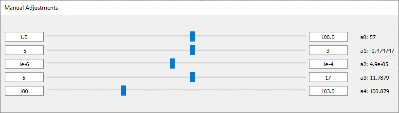

Manual Parameter Adjustment
Manual adjustment mode provides interactive control over fitting parameters without using any optimization algorithm. It allows visual exploration of parameter influence and can be useful for testing model robustness, preparing initial values, or manually shaping the model to match the data.
Overview
When manual mode is enabled, a dedicated dock displays interactive sliders for each model parameter. As you move the sliders, the fitted curve updates in real-time. This mode is isolated from automated optimization and can be toggled on or off at any point.
This mode is particularly useful: - To understand the effect of each parameter on the model - To prepare a better set of initial values (p0) before fitting - When exact values are known or imposed by physical constraints
How to enable Manual Mode
Manual mode is toggled from the Manual button in the main toolbar. Enabling it:
- Display the Manual Fit dock.
- Deactivates the Fit Control dock.
- Suspends all automated fitting and disables fit-related buttons.
The Manual Fit Dock
Sliders are generated dynamically based on the current model formula. Each parameter has:
- Initial value: The base value used in the formula.
- Range (min, max): Optional boundaries to control the slider limits.
- Slider: You can drag to change the value in real-time.
These values are either inferred from the formula or set manually. Every slider movement triggers an immediate update of the fit on the plot.
Using Sliders
Sliders are dynamically created based on the parameters detected in your fit formula. They are bounded by min/max values set manually or by default.
The fit result updates automatically as you slide.

Synchronization with Formula and Fit Options
-
If the formula is changed or re-imported, all sliders are reset.
-
Parameter names and initial values are re-parsed from the new formula.
-
Any adjustment made manually is reflected in the Initial Value (p0) of the Fit Options dialog.
Exiting Manual Mode
To exit manual mode: - Click the Manual button again in the toolbar. - The Manual Fit dock is hidden. - The Fit Control dock is re-enabled. - Automated fitting becomes available again.
Limitations
Manual mode is subject to a few constraints: - Only continuous numeric parameters are supported. - Sliders are not saved between sessions. - Advanced models with multiple independent variables are not currently supported. - Manual adjustments are not tracked or recorded in the comparison manager.